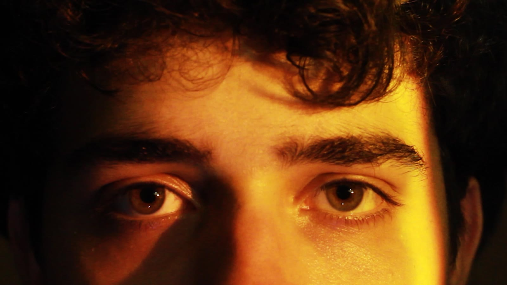
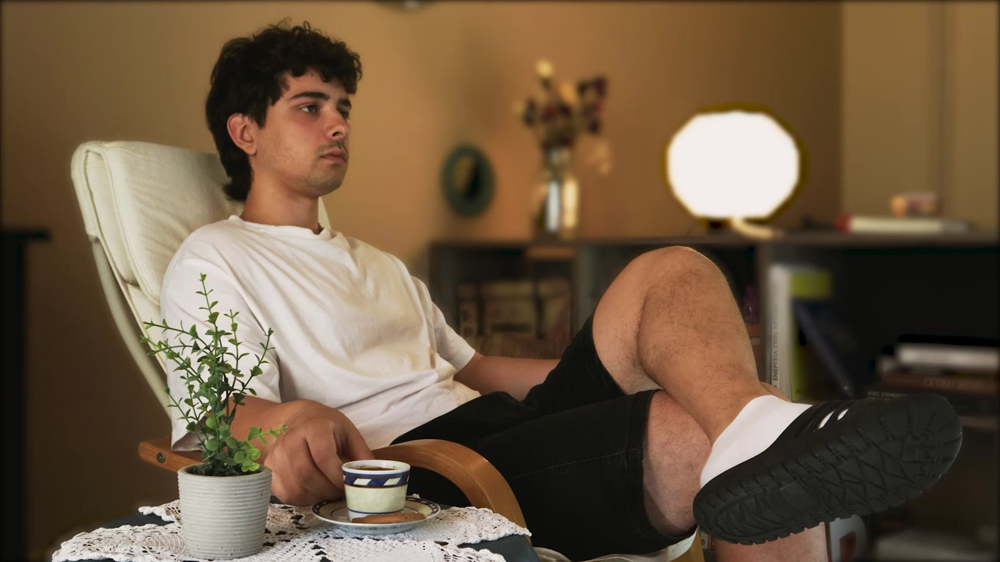
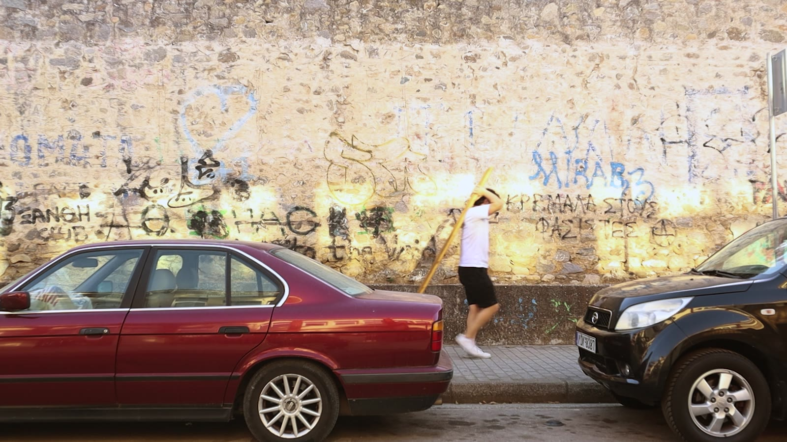
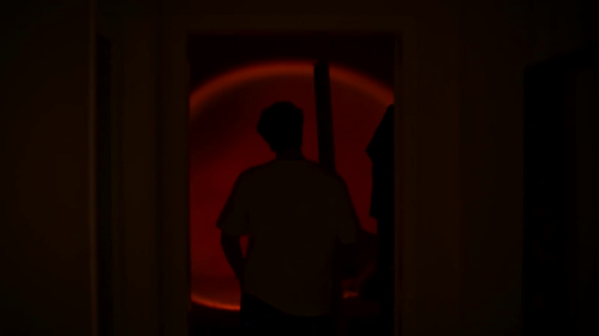
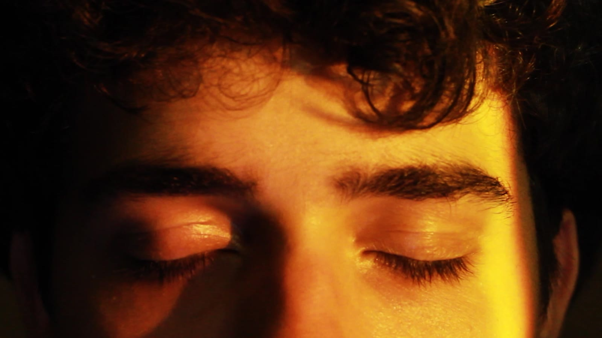
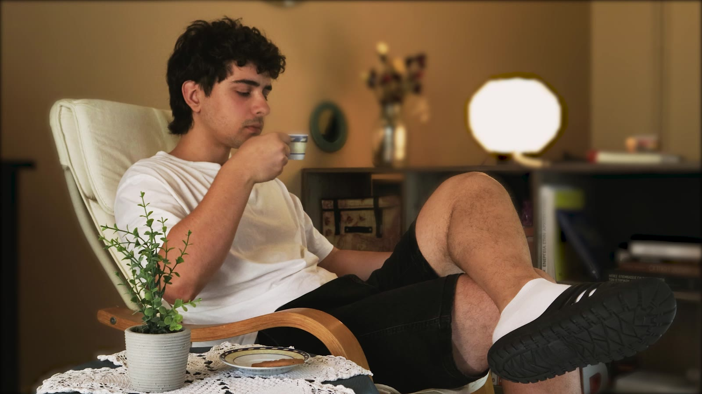
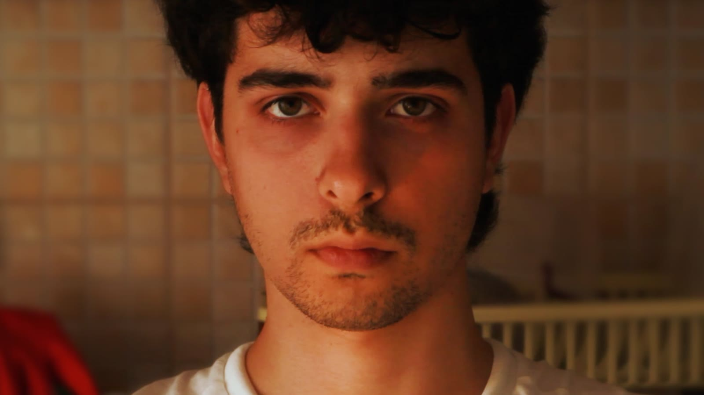
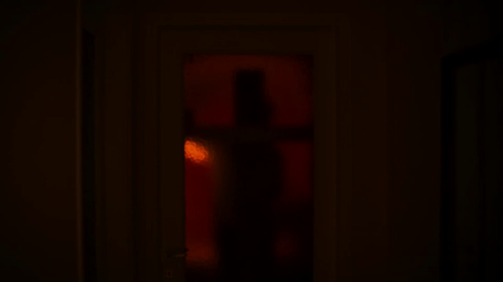
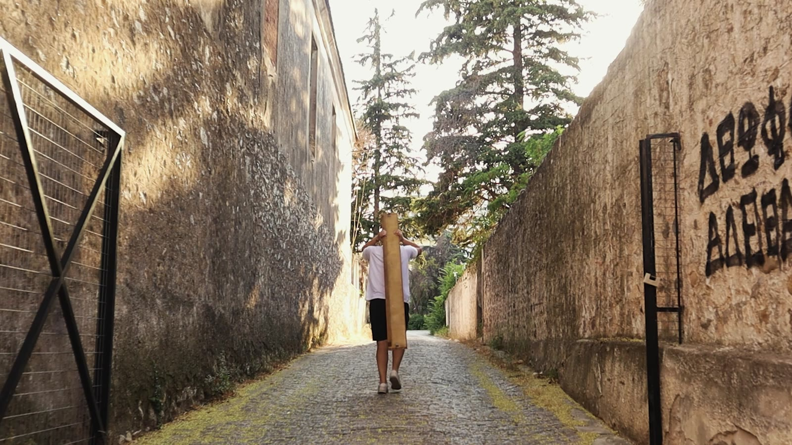
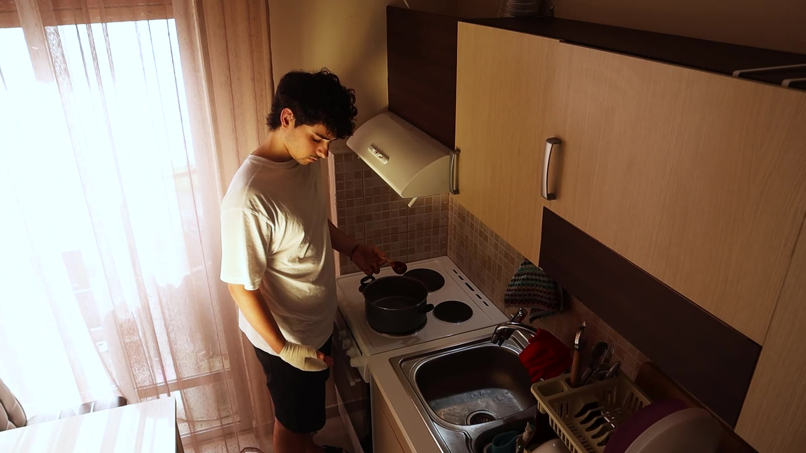

ΆΤΗ (ATË) is a short film about human arrogance and its consequences — the story of a man who, carried away by his own grandiosity, believes he can cross the limits of human nature and reach the level of the gods.
It starts from Francis Bacon’s Three Studies for Figures at the Base of a Crucifixion. The painting’s three bestial figures stand for the Erinyes, or Furies — the Greek goddesses of vengeance and punishment — and they became the core of the plot. Bacon brings Christianity and Greek mythology together in one image; the film does the same.
the film — 2′12″
the story

The main character believes he is invulnerable, because of small acts that never seem to touch his body or wear him down. That belief leads him to the hubris of grandiosity.

So the gods send Atë — the delusion that clouds the mind and makes him believe, even more, that he is a god. When he finds a piece of wood, he decides to crucify himself, sure that he will rise again and prove his divine nature.


We watch him carry out his plan and be crucified. Then he suddenly “wakes up” in the kitchen, confused, his hand bandaged — realising he is not invulnerable after all.
The delusion works as a warning, to the audience as much as to him: a glimpse of the consequences of human arrogance.




